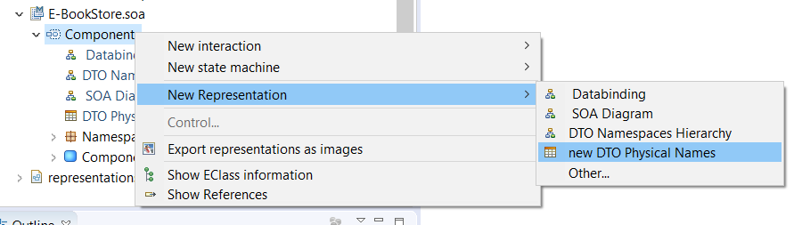
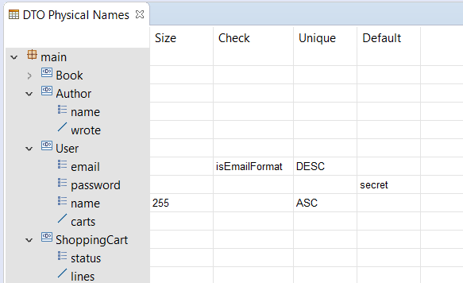

Copyright © 2008, 2022 Obeo - All rights reserved. This program and the accompanying materials are made available under the terms of the Eclipse Public License v1.0
Le point de vue
SOA (Safr@n consolidated view) fournit une table permettant de faciliter la saisie d’informations sur le stockage physique des DTO.
Les informations sont stockées sous la forme d’annotations.
Pour pouvoir créer une table DTO Physical Annotations il faut activer le point de vue DTO (Safr@n consolidated view) sur le projet via le menu contextuel Viewpoints Selection sur le projet ou sur le fichier aird.
Une fois le point de vue activé, il est possible de créer une nouvelle table sur un objet SOA de type
System.
A noter qu'à la première activation du point de vue, une table est créée automatiquement pour chaque objet SOA de type
System dans le projet.


Chaque package, DTO, attribut et référence est affiché dans la colonne de gauche sous une forme arborescente.
Quatre colonnes Size, Check, Unique et Default :
La modification des valeur se fait par édition directe des cellules du tableau.